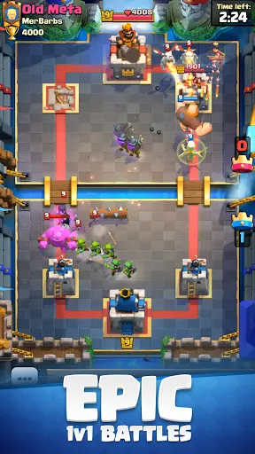

Clash Royale
Clash Royale es un juego de estrategia en tiempo real desarrollado por Supercell, disponible para dispositivos móviles iOS y Android.

Concepto y Jugabilidad
En Clash Royale, los jugadores se enfrentan en duelos 1v1 donde el objetivo es destruir las torres del oponente mientras defienden las suyas propias. Cada jugador tiene un mazo de cartas que representa diversas tropas, hechizos y edificios defensivos. Estas cartas se utilizan gastando elixir, que se regenera automáticamente durante el combate.
Elementos Clave del Juego
- Cartas: Los jugadores eligen y mejoran un mazo de 8 cartas antes de cada partida. Cada carta tiene un costo de elixir y habilidades únicas que afectan la estrategia del juego.
- Torres: Cada jugador tiene tres torres en su campo de batalla: dos torres de coronas y una torre del rey. La destrucción de torres enemigas y la protección de las propias son fundamentales para ganar partidas.
- Cofres y Progresión: Después de ganar partidas, los jugadores reciben cofres que contienen cartas y oro. Las cartas se pueden mejorar con el oro obtenido para aumentar su poder y eficacia en combate.
- Clanes y Guerras de Clanes: Los jugadores pueden unirse a clanes para compartir cartas y participar en guerras de clanes. Durante las guerras de clanes, los clanes compiten en eventos especiales para ganar premios y mejorar su clasificación.
- Eventos Especiales: Se realizan desafíos y eventos temporales que ofrecen recompensas exclusivas, fomentando la participación continua de los jugadores.
Monetización y Economía
Clash Royale es gratuito para jugar y se sostiene mediante compras dentro de la aplicación de gemas, que pueden usarse para acelerar la apertura de cofres, comprar cofres especiales y adquirir oro para mejorar cartas más rápidamente. Las gemas también permiten a los jugadores adquirir cartas específicas en la tienda del juego.
Popularidad y Comunidad
Desde su lanzamiento en 2016, Clash Royale ha sido enormemente popular y ha mantenido una comunidad activa de jugadores a nivel mundial. El juego cuenta con una escena competitiva robusta que incluye torneos y ligas organizadas por Supercell y por la comunidad misma.